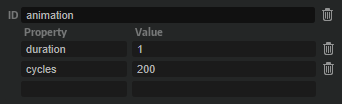

/ HALion Developer Resource / HALion Tutorials & Guidelines / How-tos /
Animating Switches Using SVGs
(Since HALion 7.0)
On this page:
Using SVGs as resources for the different states of a Switch control allows for state-specific animations, to enhance the visibility of each state. The state-specific animations are defined by using Lua expressions in the resource properties of the SVG that is assigned to each state. The SVG resources to be animated require an animation object that defines the duration and number of cycles for the animation. This integration enables the manipulation of SVG objects without the need to use UI scripts.
❕ See Animating SVGs with Additional Parameters for details on using UI scripts for animations.
Adding an Animation Object
Before you can define the animation in the SVG resource properties, you must add an additional animation object to the SVG resource you want to animate.
- Go to the Resource Tree and select the SVG resource you want to animate.
- In the the Objects line, click +.

- Set the ID of the object to
animation. - Add a
durationproperty and set its value to '1'. - Add a
cyclesproperty and set its value to '200'.

In this example, one cycle of the animation takes 1 second and the animation is played for 200 cycles. The settings should be sufficient to keep the animation running, even if you hover the mouse over the switch for a longer time, for example. Depending on the application of your animation, you can increase or decrease these values.
| Property | Description | Type |
|---|---|---|
| duration | This property defines how long it takes to play one cycle of the animation in seconds. | float |
| cycles | This property defines how often the animation is played. The minimum number of cycles must be greater than 0. | integer |
Defining the Animation
The animations are defined in the SVG resource properties by using Lua expressions. An expression begins with $ followed by (). Everything inside the brackets will be evaluated and returns the effective value for the property.
$(expression)
Assuming the presence of an animation object, you can use the following variables in Lua expressions:
| Variable | Description |
|---|---|
| Duration | Corresponds to the value set by the duration property. |
| T | The overal time since the start of the animation in seconds. |
| t | The normalized time (0 to 1.0) within the current cycle. |
| Cycle | The number of completed cycles, starting at 0. The cycles property defines the maximum number of cycles. |
Animating Switches
The following examples are intended as an inspiration for you to develop your own solutions and ideas.
Example VST Preset

To explore the templates in this example:
- Load Animating Switches Using SVGs.vstpreset.
- Open the Macro Page Designer, go to the GUI Tree and select the template you wish to explore.
- Click Edit Element
 to examine the template.
to examine the template. - Inside the template, select the Switch control. Take a look at which Bitmap resources have been assigned to the different states of the switch.
- Go to the Resources Tree and select the corresponding SVG resource. Take a look at the IDs, properties, and values as listed below.
Animated Dashed Line
Dashes Switch
In this example, the same animation is used for the on and off states of the switch.
Resources: AniRect SW1_Off_Hover, AniRect SW1_On_Hover.
| ID | Property | Value |
|---|---|---|
| Rect | stroke-dashoffset | $(1+t*20) |
Description: A dashed line moves counterclockwise around the switch when you hold the mouse over the switch. By using $(1-t*20) the dashed line moves clockwise around the switch.
Animated Colors
In this example, different animations are used for the on and off states of the switch.
Colors Switch
Resource: AniRect SW2_Off_Hover.
| ID | Property | Value |
|---|---|---|
| Rect | fill | hsla(100,0%,$(100-math.cos(t*6.28)*72)%,1) |
Description: The color periodically fades between grey and white when you hold the mouse over the switch while the switch is in the off state.
Resource: AniRect SW2_On_Hover.
| ID | Property | Value |
|---|---|---|
| Rect | fill | hsla(214, $(100-math.cos(t*6.28)*40)%, $(80-math.cos(t*6.28)*20)%, 1) |
Description: The color periodically fades between white and blue when you hold the mouse over the switch while the switch is in the on state.
Animated Size
In this example, different animations are used for the on and off states of the switch.
Size Switch
Resource: AniRect SW5_Off_Hover.
| ID | Property | Value |
|---|---|---|
| Circle | r | $(7-math.abs(0.5-t)*10) |
| feGaussianBlur1740 | stdDeviation | $(1-math.abs(0.5-t)*2) |
Description: The radius of the circle and the deviation of the blur change periodically when you hold the mouse over the switch while the switch is in the off state. The color is grey and the inner circle is smaller than the blur. The 'r' property describes the radius of the 'Circle' element. A negative value for 'r' must be avoided with math.abs. The 'stdDeviation' attribute defines the standard deviation for the blur.
Resource: AniRect SW5_On_Hover.
| ID | Property | Value |
|---|---|---|
| Circle | r | $(7-math.abs(0.5-t)*6) |
| feGaussianBlur1740 | stdDeviation | $(1-math.abs(0.5-t)*2) |
Description: The radius of the circle and the deviation of the blur change periodically when you hold the mouse over the switch while the switch is in the on state. The color is green and the inner circle is larger than in the off state. The 'r' property describes the radius of the 'Circle' element. A negative value for 'r' must be avoided with math.abs. The 'stdDeviation' attribute defines the standard deviation for the blur.
Animated Brackets
In this example, multiple properties get animated for each state and different animations are used for the on and off states of the switch.
Brackets Switch
Resource: AniRect SW6_Off_Hover.
| ID | Property | Value |
|---|---|---|
| Circle | fill | hsla(100,0%,$(100-math.abs(0.5-t)*144)%,1) |
| Circle | r | $(6-math.abs(0.5-t)*4) |
| ArrowL | transform | translate ($(-10+t*20)) |
| ArrowL | fill | hsla(100,0%,80%,$(1-t*0.9)) |
| ArrowR | transform | translate ($(10-t*20)) |
| ArrowR | fill | hsla(100,0%,80%,$(1-t*0.9)) |
Description: The switch blinks periodically in white and round brackets are moving from the outside to the inside when you hold the mouse over the switch while the switch is in the off state. The 'r' property describes the radius of the 'Circle' element. A negative value for 'r' must be avoided with math.abs.
Resource: AniRect SW6_On_Hover.
| ID | Property | Value |
|---|---|---|
| Circle | fill | hsla(154,40%,$(50-math.abs(0.5-t)*40)%,1) |
| Circle | r | $(6-math.abs(0.5-t)*4) |
| ArrowL | transform | translate ($(-10+t*20)) |
| ArrowL | fill | hsla(154,40%,50%,$(1-t*0.9)) |
| ArrowR | transform | translate ($(12-t*20)) |
| ArrowR | fill | hsla(154,40%,50%,$(1-t*0.9)) |
Description: The switch blinks periodically in green and round brackets are moving from the outside to the inside when you hold the mouse over the switch while the switch is in the on state. The 'r' property describes the radius of the 'Circle' element. A negative value for 'r' must be avoided with math.abs.